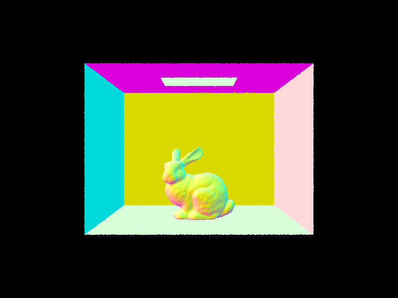
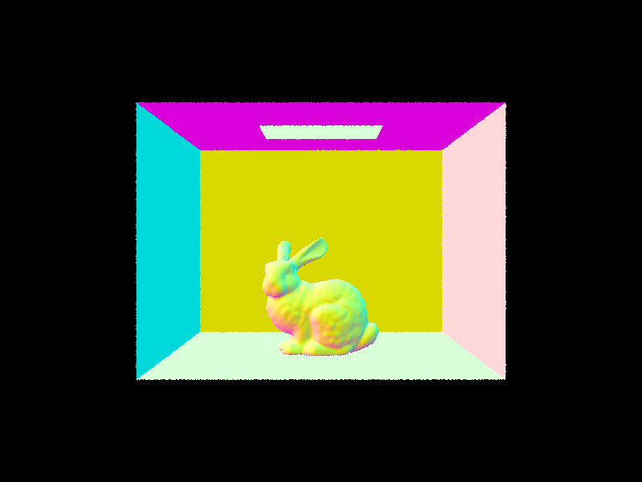
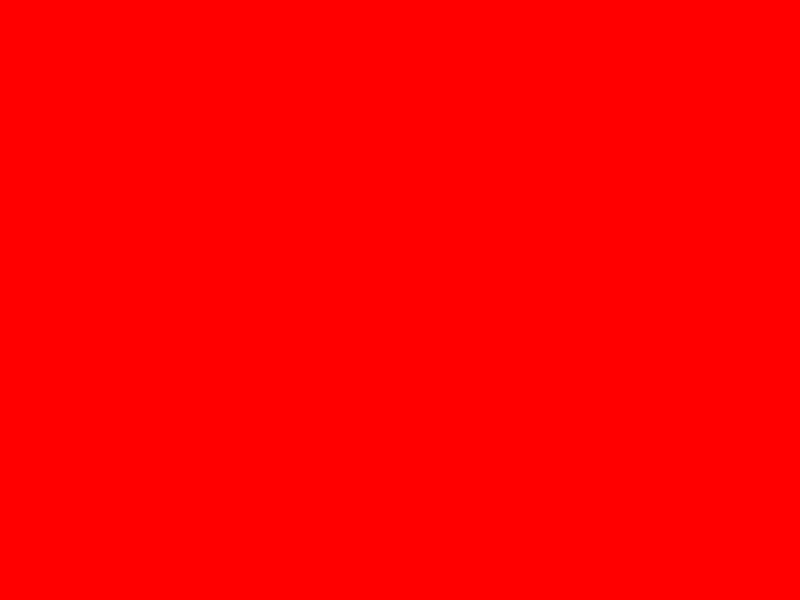
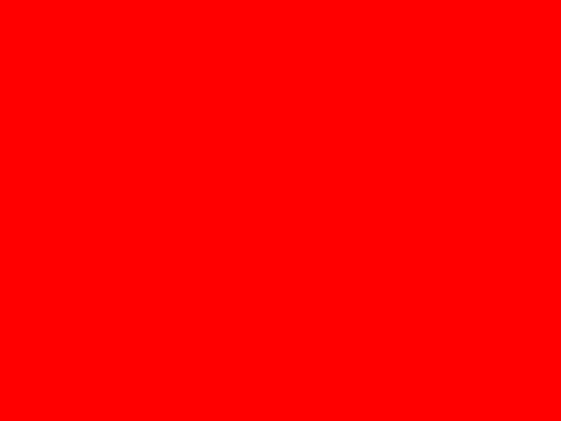

CS184/284A Spring 2025 Homework 3 Write-Up
Link to main webpage: https://cal-cs184.github.io/hw-webpages-su25-archisha1223/
Link to GitHub repository: https://github.com/cal-cs184/hw-pathtracer-updated-rabbit
Link to website repo: https://github.com/cal-cs184/hw-webpages-su25-archisha1223

Overview
Give a high-level overview of what you implemented in this homework. Think about what you've built as a whole. Share your thoughts on what interesting things you've learned from completing the homework.Part 1: Ray Generation and Scene Intersection
In this part of the project, I implemented ray generation and ray-primitive intersection, which are the foundation of ray tracing. These steps allow the program to simulate how rays of light interact with objects in a scene so we can render images. Our goal is to first transform the image coordinates to camera space, generate the ray in the camera space, and finally transform it into a ray in the world space. Instead of sending one ray per pixel, we generate many rays for each pixel (these are called samples). By averaging the results of all the rays, we get a smoother and more accurate image. A ray is defined by the equation: r(t)=o+t d where: o is the origin of the ray (the camera position of where it starts), d is the direction the ray travels, represented as a 3D vector, t is the time of how far along the ray we travel The camera at the origin (0, 0, 0) in camera space. It looks down the -Z axis. The virtual sensor plane is at Z = -1. We convert pixel coordinates into rays in "camera space," then rotate and translate those rays into "world space" so they match the actual position and orientation of the camera in the scene. Next, I estimated the color of each pixel using Monte Carlo sampling. For every pixel, I looped over ns_aa samples, generated sub-pixel offsets, normalized them, and created rays. For each ray, I computed radiance, averaged the results, and updated the sample buffer. Thus, each pixel's color represents the direction of the ray it generates:
The camera at the origin (0, 0, 0) in camera space. It looks down the -Z axis. The virtual sensor plane is at Z = -1. We convert pixel coordinates into rays in "camera space," then rotate and translate those rays into "world space" so they match the actual position and orientation of the camera in the scene. Next, I estimated the color of each pixel using Monte Carlo sampling. For every pixel, I looped over ns_aa samples, generated sub-pixel offsets, normalized them, and created rays. For each ray, I computed radiance, averaged the results, and updated the sample buffer. Thus, each pixel's color represents the direction of the ray it generates:
Next, I implemented ray-triangle intersection by following Lecture 9 and using the Möller Trumbore Algorithm to determine whether a ray hits a triangle within its valid range and ignores points outside of it. If there is a hit, I updated the ray to the nearest intersection point. I then computed the hit distance and interpolated the surface normal using barycentric coordinates by weighting the vertex normals n1,n2,n3 with α,β,γ. Finally, I stored the primitive and BSDF. For ray-sphere intersections, the implementation was much easier as we didn't need barycentric coordinates or interpolation. We could simply solve the quadratic equation for the ray-sphere intersection points and pick the closest valid solution. Below, we can see the renders using this approach.
 


Part 2: Bounding Volume Hierarchy
In this section, I worked on implementing a Bounding Volume Hierarchy (BVH) to accelerate the path tracer allowing it to render files more efficiently. To achieve this, I grouped primitives into a binary tree of bounding boxes. First, I built a root node where the bounding box encloses all primitives. If the number of primitives in a node is less than max_leaf_size(), it becomes a leaf node and it is not split further. Otherwise, we split it into two children. To split the bounding box into sub-nodes, I used a heuristic that focused on finding the axis with the largest extent (x, y, or z), which basically finds the largest difference between the min and max. I then computed the average of the primitive centroids along that axis as the splitting point. To handle the edge case of all primitives being on one side and the other side being empty, I keep all the primitives in the current node and mark it as a leaf. This avoids creating extra or empty branches. Below are examples of large .dae files that were rendered with BHV acceleration.
Here we can compare rendering with and without BVH acceleration. Below, we render a few scenes with moderately complex geometries. The first scene is CBlucy.dae and we can notice that without BVH acceleration the rendering time is: seconds. In comparison, when rendered with BHV acceleration, the rendering time is significantly reduced to: seconds. This reduction comes from BVH acceleration reducing ray intersection complexity from O(n) to O(log(n)). This allows the path tracer to quickly eliminate large portions of the scene where a hit wouldn’t occur, by using the bounding box to focus on intersection tests only where needed. This results in a dramatic improvement in efficiency.
Part 3: Direct Illumination
In this part, we focus on simulating direct illumination which allows for rendering images with realistic lighting and shading. The surfaces we render are encoded in the BSDF class (Bidirectional Scattering Distribution Function), where BSDF is a generalization of the BRDF to represent materials that can both reflect and transmit light. First I implemented diffuse BSDF, to represent a diffuse material that reflects incoming light equally in all directions on the hemisphere. Next, I implemented zero-bounce illumination to represent the light that comes out from the light source itself. When a ray intersects a surface, we must estimate how much illumination arrives at that point by considering all the light coming from every direction. To determine a close estimate, we use Monte Carlo sampling to approximate this integral. We implemented two different strategies to do this: Uniform Hemisphere Sampling and Light Importance Sampling. Uniform Hemisphere Sampling chooses random directions uniformly over the hemisphere and checks if they reach a light source. To implement this, I generated a fixed number of sample directions uniformly over the hemisphere that are centered at the intersection point’s normal. I transformed each sample to world space and I casted a “shadow ray” from the hit point along that direction. If the ray hit a light source, I computed its contribution to the outgoing radiance using the surface’s BSDF value for the sampled direction, the light’s emission, and the cosine of the incident angle. These were summed over all samples, then normalized by the total number of samples to estimate the direct illumination from the hemisphere. Overall, this causes the rendered images to show significant noise as seen below.Comparatively, I implemented Importance Sampling of the lights to account for scenes with point light sources. Instead of sampling in random directions, this method samples rays that specifically point toward each light source in the scene. Specifically, I used sample_L. For each sampled light direction, I cast a shadow ray to check if the light was visible, and if it was, I computed the contribution using the BSDF, the light’s radiance, and the cosine term, then normalized by the PDF. This reduces variance by sampling intentionally and improves efficiency as there is less computational overhead. The result is smoother shading and fast convergence to a more clean image than compared to uniform sampling as we can see below.
In comparison, Importance Sampling displays better results with smoother images and more efficiency whereas Hemisphere Sampling is more grainy or noisy and time-inefficient. This is because Hemisphere Sampling requires numerous random samples making it inefficient since most of the sampled rays either miss the lights entirely or barely contribute to illumination. Importance sampling has faster convergence since the samples are targeted and calculated purposefully. Since there is less variance, we have smoother resulting renders. Below, we focus on light sampling. We can see that the noise varies when we change the number of rays to sample each area light. As we increase the number of samples, we see less noise. Here are the results with 1, 4, 16, and 64 samples per area light and 1 sample per pixel (contributing to the high noise):
Part 4: Global Illumination
*In this section, my code broke as I was switching between testing accumulated, unaccumulated, and isAccumBounces = False. While doing the project, I did see the correct output for all but as I rebuilt to make submission images after adding some code to debug adaptive sampling it broke. I apologize that the images for all do not look correct. In this part, we focus on simulating indirect illumination and capturing light that has bounced multiple times before reaching the camera. This allows us to account for complex lighting effects. I implemented multiple bounces in indirect lighting via at_least_one_bounce_radiance. Starting from a surface intersection, I first added direct illumination from one_bounce_radiance if isAccumBounces is true. If the ray still has remaining depth, I sample a new bounce direction using sample_f, transform it into world space, and create a new ray from the hit point. I use Russian Roulette to randomly terminate paths after the first bounce, with a continuation probability of 0.7, ensuring the estimator remains unbiased. If the new ray hits another surface, I recursively call at_least_one_bounce_radiance on it, scale the returned radiance by the BSDF value, the cosine of the incident angle, and normalized by the PDF and continuation probability. When isAccumBounces is false, I zeroed out earlier contributions so that only the radiance from the target bounce depth is returned. In est_radiance_global_illumination, I sum zero-bounce emission with the recursive multi-bounce term to produce the final radiance. This implementation allows light to bounce multiple times, creating more realistic and visually rich renders that capture subtle lighting effects beyond direct illumination. Here are images rendered with global (direct and indirect) illumination.Here, we can compare renders with only direct illumination and only indirect illumination. Sphere_direct and sphere_indirect
Below, I rendered an image with different max ray depth values: 0, 1, 2, 3, 4, 5 where isAccumBounces is false. *Note: kept 64 pixels per sample as it took too long to run even with the instructional machine and I was unable to spend as much time that is needed for this project.
From the 2nd and 3rd bounce of light, *it should be expected to see* the light becoming darker. This is because once the light comes directly from the source, it is bright, as seen more prominently in the 1st bounce and then in the 2nd bounce. With each bounce, the light is weaker and hence reduced as we increase m. In comparison to rasterization, path tracing with multiple bounces actually simulates light reflections and indirect light transport, while rasterization does neither. Rasterization is most similar to when m=1.
Below we see the rendered image with different max ray depth values: 0, 1, 2, 3, 4, 5 with accumulated and accumulated bounces. *Note: kept 64 pixels per sample as it took too long to run even with the instructional machine and I was unable to spend as much time that is needed for this project.
Below are renderings with Russian Roulette.
Below are addiional renderings.
Part 5: Adaptive Sampling
In this part, I worked on adaptive sampling. Adaptive sampling lets the renderer spend more time on noisy pixels and less on smooth ones. For each pixel, I took samples in small batches and added up their colors. I tracked how bright each sample is so I can see how much the brightness is changing. After every batch, I checked if the pixel’s brightness had stopped changing much by using a 95% confidence interval test. If the changes are small enough, I stop sampling that pixel early. If not, I keep going until the pixel is stable or I hit the maximum number of samples. This speeds up rendering because areas with little detail converge quickly, while more complex or shadowed areas get extra samples to reduce noise. *At this point my code is broken and for some reason the spheres are just black. *My implementation is slightly off - I was not able to debug this, sorry 
